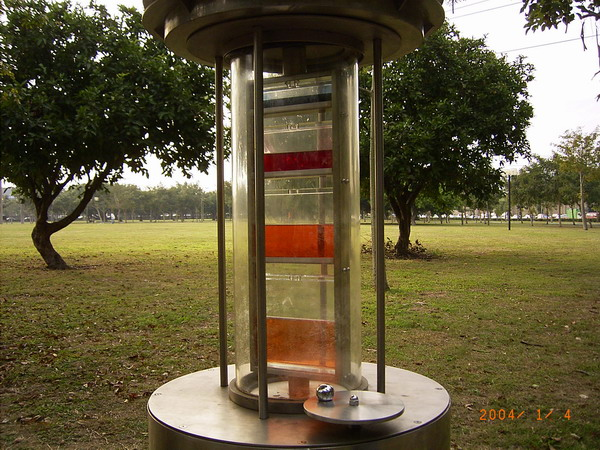
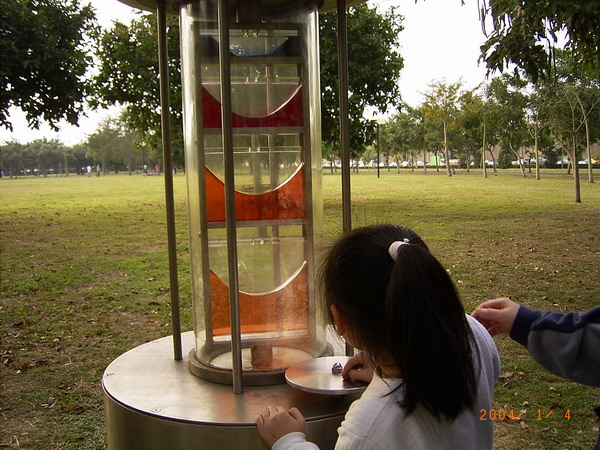
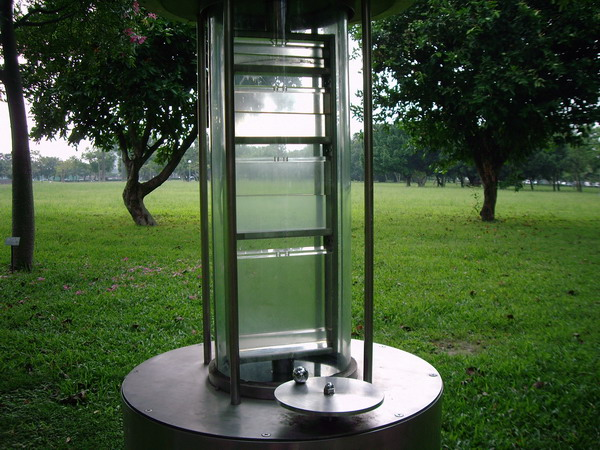
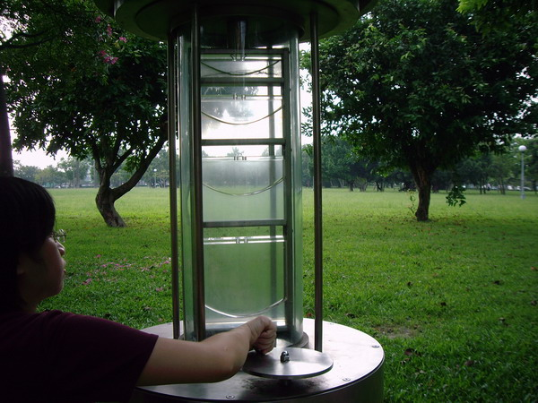

假日和老婆到美崙公園玩，看到這個有趣的設施，引發無限感慨~

↑四年前第一次到這時，這個玩意兒還很新，用顏色讓液面更明顯。

↑用把手帶動旋轉液面，液面就彎曲成一個美麗的拋物線，注意最上面的深藍色液體，
向左右分開勒~
當時像機沒有錄影功能，所以這麼美的畫面只能拍照。

↑四年後再回到同一個地方，一切都沒變，但是液體卻因為陽光的照射而被分解掉了。

↑旋轉液面仍可作出美麗的拋物線，但是少了顏色，似乎就少了一些美感。
四年後，像機有錄影功能了，但是液體卻褪色了。
真是樹欲靜而風不止啊。
-------------充滿感慨的分格線-------------
想一想：是什麼力讓液面彎曲？液體作原周運動時，誰提供原周運動所需的向心力？